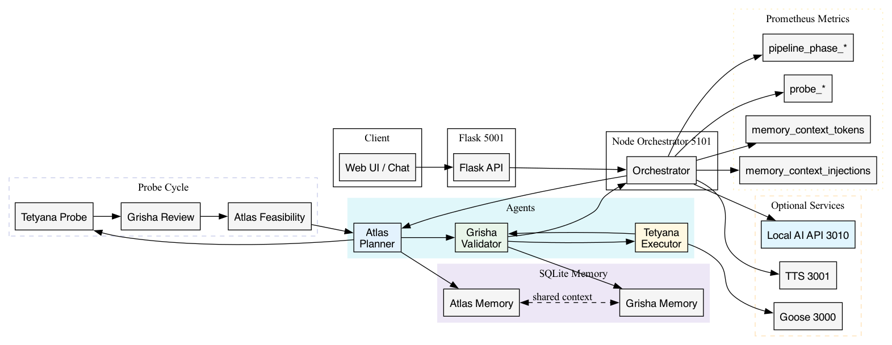
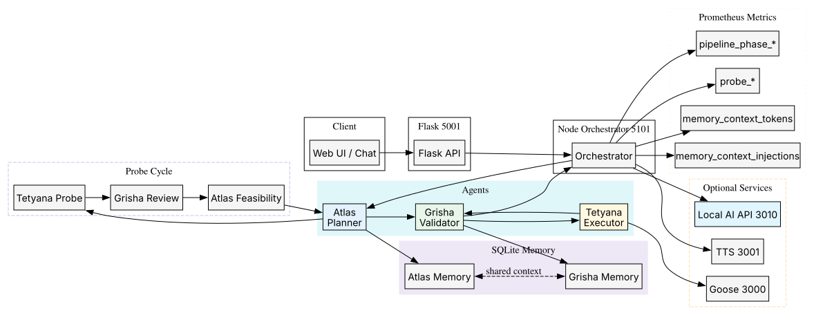

Probe Cycle: Мінімальний експеримент для збирання бракуючих артефактів
Memory: SQLite факти (key/value) з exponential decay + frequency ранжуванням
Pruning: Capacity + TTL (3d by default) після кожного запису
Metrics: Prometheus endpoints (`/metrics/prometheus`) з memory_* та probe_*
rememberSafe: інлайн дедуп (60s) щоб зменшити шум
1. High-Level System Overview (Mermaid)
%% Embedded from system_overview.mmd (sync manually if changed)
flowchart TD
subgraph Client[User / UI]
UI[Web UI / Chat]
end
UI --> API[Flask API 5001]
API --> Orchestrator[Node Orchestrator 5101]
subgraph Agents[Multi-Agent Core]
Atlas[Atlas\nPlanner]
Grisha[Grisha\nValidator]
Tetyana[Tetyana\nExecutor]
end
Orchestrator --> Atlas
Atlas --> Grisha
Grisha -->|approve/adjust| Tetyana
Tetyana -->|execution result| Grisha
Grisha -->|verdict & followup| Orchestrator
Orchestrator --> API --> UI
subgraph ProbeCycle[Probe Cycle]
TP[Tetyana Probe]
GP[Grisha Probe Review]
AF[Atlas Feasibility]
end
Atlas -. initiate probe .-> TP
TP --> GP --> AF --> Atlas
subgraph Memory[Shared Memory (SQLite)]
MAtlas[(Atlas Memory)]
MGrisha[(Grisha Memory)]
end
Atlas <--> MAtlas
Grisha <--> MGrisha
MAtlas <-. shared context .-> MGrisha
subgraph Metrics[Prometheus Metrics]
P1[pipeline_phase_*]
P2[probe_*]
P3[memory_context_tokens]
P4[memory_context_injections]
P5[memory_facts_written]
P6[memory_facts_pruned]
end
Orchestrator --> Metrics
subgraph External[Optional Services]
G[Goose Executor 3000]
TTS[Ukrainian TTS 3001]
LLM[Local AI API 3010]
end
Tetyana -->|task exec| G
Orchestrator -->|LLM calls| LLM
Orchestrator -->|voice gating| TTS
2. Runtime Request Flow (Sequence)
sequenceDiagram
autonumber
participant U as User/UI
participant F as Flask API (5001)
participant O as Orchestrator (5101)
participant A as Atlas
participant G as Grisha
participant T as Tetyana
participant DB as SQLite Memory
U->>F: chat message
F->>O: /chat
O->>DB: recall ranked memory
O->>A: plan prompt + memory
A-->>O: plan
O->>G: validation
G-->>O: precheck
alt probe needed
O->>T: probe request
T-->>O: artifacts
O->>G: probe review
G-->>O: assessment
O->>A: feasibility
A-->>O: ADVANCE/CLARIFY
end
alt execute
O->>T: instructions
T-->>O: result
else clarify
O-->>F: clarification payload
F-->>U: ask user
end
O->>G: final validation
G-->>O: verdict
O->>DB: rememberSafe facts
O-->>F: response
F-->>U: stream
3. Graphviz Component Map (Exported)
PNG/SVG генерується з components.graphviz. Якщо вже згенеровано – відобразиться нижче.
PNG

SVG

4. Memory Ranking Flow
sequenceDiagram
autonumber
participant O as Orchestrator
participant M as SQLite
participant R as Ranked Summarizer
participant A as Atlas
participant G as Grisha
O->>M: fetch entries
O->>R: summarizeRanked
R-->>O: ranked context
O->>A: planning prompt
A-->>O: plan
O->>M: rememberSafe
O->>G: validation
G-->>O: verdict